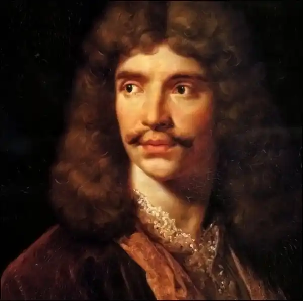

МОЛЬЄР (ЖАН БАТІСТ ПОКЛЕН)
(1622-1673)
Великий французький драматург, театральний діяч народився в Парижі 15 січня 1622 року в буржуазній сім'ї й повинен був успадкувати професію свого батька, придворного шпалерника, або стати юристом але він вирішив стати актором. За розповіддю Гримаре, першого біографа Мольєра, дід частенько водив онука до Бургундського готелю на вистави трагедій, трагікомедій, в яких блискуче виступав Бельроз, і можна уявити, що зачарований Жан-Батіст мріяв бути схожим на кумира парижан. Але ця професія вважалась однією з найнікчемніших. Актори були прокляті церквою, їх не дозволяли ховати на кладовищі, якщо перед смертю вони не відмовилися від свого заняття. Коли Мольєр став найуславленішим письменником свого часу, Французька Академія запропонувала йому стати академіком, але за умови, що він покине театральну діяльність. Мольєр залишився актором і керівником свого театру, тому двері Академії для нього назавжди зачинилися. Випробувавши свої акторські сили в шкільних спектаклях і постановках, він вступив до трупи "Блискучого театру" (1644), але цей театр аж ніяк не процвітав, всі актори були аматорами, а не професіоналами. Зрештою він зазнав фіаско, і Поклен, який відповідав за фінансування театру, навіть якийсь час сидів у борговій ямі. Актори вирішили покинути Париж у пошуках щастя в провінції. Там вони пробули дванадцять років (1646-1658). Спочатку їх спіткали серйозні невдачі: вони грали лише трагедії, оскільки класицисти вважали комедії низьким жанром, що не міг торкатися значних проблем, бо дійсність в комедіях відображалася дуже поверхово й вульгарно, широко використовувалися грубі жарти, непристойні ситуації. Комедія мала розважати. Аристократичний глядач з презирством ставився до комедії, а паризька театральна трупа могла розраховувати на успіх, тільки підкоривши аристократів, інакше їй було не бачити ані слави, ані грошей. Класицизм з його презирливим ставленням до комедій стримував розвиток цього жанру. Мольєр — теж класицист за способом відображення дійсності, але цей геніальний драматург вільно ставився до правил і норм, заявляючи, що люди повинні бути представлені в комедіях такими, якими вони є, щоб у дійових особах можна було пізнати сучасне суспільство; а якщо правила класицизму не допомагають цьому, на них не треба звертати уваги. Працюючи у провінції, Мольєр починає опановувати принципи й прийоми комедійних жанрів, пише сценарії для своєї трупи. Трупа знайшла свій репертуар і свого глядача. Актори досягли вершин комедійної майстерності, і Мольєр у їх складі формував свій талант. Він сипав жартами, імпровізував, його легке заїкання давало комічний ефект, а обличчя з масивним носом, великим ротом і густими бровами сяяло веселістю. Через декілька років актор стає на чолі театрального товариства. Слава про провінційну комедійну трупу доходить до Парижа. Мольєр не тільки сам цілковито віддавався сцені, він став першим учителем нових принципів сценічної гри. У 1658 році трупа Мольєра повернулася до Парижа. Вона зіграла перед Людовіком XIV і його двором трагедію Корнеля "Нікомед". Знову трагедія — знову невдача. Але Мольєр, бажаючи виправити становище, відразу ж показав свою комедію "Закоханий доктор" у дусі італійських комедій масок. Успіх був величезним. Король залишив трупу в Парижі, віддав їй театр Пті-Бурбон, виділив Мольєру щорічний пенсіон. Першою п'єсою для нового театру стала одноактна комедія "Смішні манірниці" (1659). У ній висміювалися провінціалки, які захоплювалися преціозною культурою, мріяли про аристократичне життя, відмовивши своїм буржуазним нареченим. Комедія мала величезний успіх, але аристократки образилася на Мольєра, вважаючи, що він висміяв їх. Дійсно, Мольєр зі злістю висміяв наміри аристократії відгородитися від народу за допомогою умовної культури, химерної мови та манер. Вороги вирішили помститися драматургу. Трупу виселили з Пті-Бурбона, а будинок театру знесли так швидко, що в ньому загинули декорації й костюми. Актори опинилися на вулиці, але не покинули Мольєра, хоча їх запрошували в інші театри. Король виділив трупі нові приміщення — залу в палаці Пале-Ройяль. У цьому приміщенні Мольєр буде працювати до кінця свого життя. Король опікував молодий мольєрівський театр: з двадцяти восьми спектаклів половина була вперше показана саме королю, а багато з комедій були написані й зіграні за спеціальним велінням короля. Постановка трагедій, що не приносила успіху трупі, наштовхує Мольєра на думку перемістити моральну проблематику з трагедії з її умовними античними персонажами на комедію, котра зображує сучасне життя звичайних людей. Вперше ця ідея була втілена в комедії "Школа чоловіків" (1661), слідом за нею була "Школа жінок" (1662), в яких драматург поставив проблему виховання. Прославляючи вільне гуманне виховання, право людини на шлюб за любов'ю, Мольєр виступив проти офіційної моралі свого часу. Феодальне суспільство, церковники, багаті буржуа не могли вибачити Мольєру порушення феодальної моралі. Однак попри злостивість ворогів, комедія йшла з великим успіхом. Мольєр своїм завданням у творчості бачив безжалісне викриття пороків — егоїзму, честолюбства, святенництва й користолюбства, що породжувалися суспільством, заснованим на дворянських привілеях і власницьких інстинктах. На 1664-1670 роки припадає найвищий розквіт творчості великого драматурга. Саме в цей час він створює свої кращі комедії: "Тартюф", "Дон Жуан", "Мізантроп", "Скупий", "Міщанин-шляхтич". Найзначніша комедія Мольєра "Тартюф" мала найважчу долю. Постановка вперше відбулась у 1664 році під час грандіозного свята, що було влаштовано королем на честь своєї дружини й матері. Мольєр написав сатиричну п'єсу, в який викривав "Товариство святих дарів" — таємничу релігійну установу, що намагалася підкорити своїй владі всі сфери життя в країні. Королю комедія сподобалася, він побоювався посилення влади церковників. Але ко-ролева-мати Анна Австрійська була глибоко обурена сатирою, вона опікувалася цим товариством. Церковники вимагали, щоб автора спалили на вогнищі за неповагу до церкви. Комедія була заборонена, але Мольєр продовжував працювати над нею. Художня форма третього варіанта була найдосконалішою — її надрукували, її читають і виконують на сцені вже понад трьохсот років. Мольєр помер у своєму театрі відразу ж після постановки останньої комедії "Удаваний хворий" (1673), де він виконував головну роль. Тільки після тривалих клопотань його удови й особистої вказівки короля Людовіка XIV змогли поховати тіло Мольєра за християнським обрядом, проти чого заперечувала церква. Мольєрівська трупа була указом короля об'єднана з трупою Бургундського готелю, внаслідок чого з'явився театр "Комеді Франсез" — "дім Мольєра", як його й донині називають французи. Остання визначна комедія Мольєра "Міщанин-шляхтич" (1670) написана в жанрі "комедії балету": за вказівкою короля до неї були включені турецькі танці. Мольєр зміг, вводячи танцювальні сцени в сюжет комедії, зберегти єдність її структури. Основний закон структури полягає в тому, що комедія характеру постає на фоні комедії звичаїв. Носії звичаїв — це всі герої комедії, за винятком головної дійової особи Журдена. Сфера звичаїв — традиції, звички суспільства. Персонажі здатні виразити цю сферу лише разом (такими є дружина й дочка Журдена, його слуги, вчителі, аристократи Дорант і Доримена, які мають ціль нажитися за рахунок багатого буржуа Журдена). Вони наділені характерними рисами, але не характером; ці риси комічно загострені, але не порушують правдоподібності. Журден, на відміну від персонажів комедії звичаїв, постає як комедійний характер. Особливості мольєрівських характерів полягають у тому, що тенденція, що існувала насправді, доводиться до такого ступеня концентрації, що герой виходить з рамок природного, розумного порядку. Такими є Дон Жуан, Альцест, Гарпагон, Тартюф, Аргон — герої найвищою мірою чесні й безчесні, мученики шляхетних пристрастей і дурні. Таким є Журден, буржуа, який вирішив стати дворянином. Постановці самої комедії передувала увертюра, після чого на сцені з'являлися вчителі музики й танців, вони надзвичайно задоволені, що відшукали собі багатого покровителя — пана Журдена, прихильного до дворянства й світського обходження. Так одразу ж, з перших реплік п'єси, визначається її основна тема. Журден марить вирватися з нікчемності й стати знатною особою. Це визначає всі його помисли, бажання й дії, повністю підкоряє його натуру, робиться сенсом його життя. Знаменним є перший вихід пана Журдена: вбравшись так, як вбирається знать,— йому вже здається, що його мрія — мрія буржуа — стає дійсністю. Пан Журден дуже охоче входить у нову роль і справді вважає себе гідним цього високого звання. Він підтримує дружбу з тими людьми, які близькі до королівського двору. Але що впевненіше поводиться Журден, то більш пихатим стає, чим далі комічніше виглядає його бажання бути аристократом. Що ж спричинило "божевілля" пана Журдена? А те, що його уявлення про виключність дворянства були облудними. І тому сатира народжувалась з кричущої невідповідності суджень про велич і шляхетність знаті і справжньої ціни панівного стану. Сміючись над Журденом, який так хоче стати аристократом, Мольєр одночасно сміявся і над тим ідеалом, що його вигадав для себе Журден. Але хоч як намагався шляхтич Журден не бути схожим на самого себе, все ж таки він залишався таким, яким він був. Позичаючи графові гроші, він рахує їх до останнього су; сварячись з кравцем, служницею або дружиною, він вдається до лайки і навіть до бійки, забуваючи про всі "великосвітські" уроки; вивчаючи науки, він вибирав ту з них, в якій бачив практичну необхідність, а перед тужливим співом віддавав перевагу простій веселенькій пісеньці. Його жага до дворянства менш за все була хитрим розрахунком буржуа, суб'єктивно вона ставала щирою мрією, яка захопила всю натуру Журдена. Це призводить до того, що шановний пан Журден легко вступає в останній, буфонний акт комедії і вільно діє у примхливому маскараді посвячення в сан "мамамуші". Дарма що його лупцюють палками, зате він досяг бажаної мети. І дуже знаменно, що в цій атмосфері загальних веселощів лунають серйозні слова, що відверто виражають позицію автора.